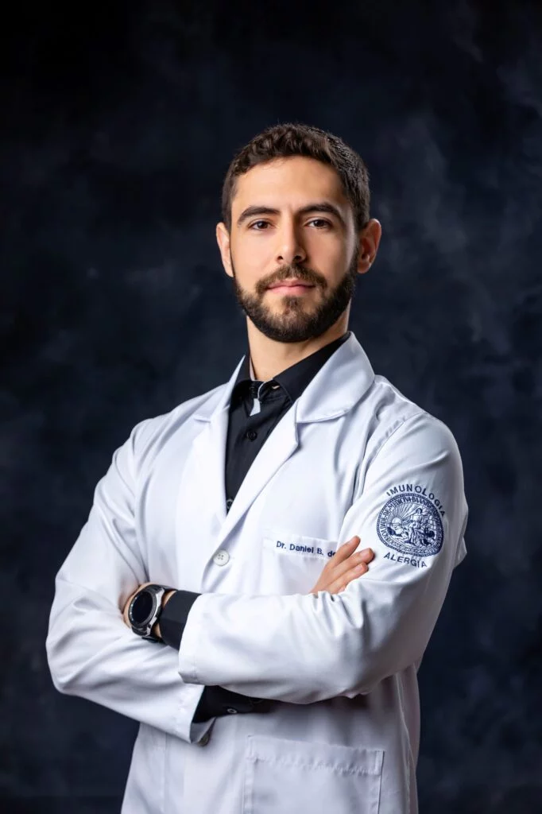

Dr. Rodrigo Santos

Dr. Rodrigo Santos é um ortopedista altamente respeitado e renomado na área da ortopedia. Ele é amplamente reconhecido por sua expertise em diagnosticar e tratar uma variedade de condições ortopédicas, desde lesões esportivas até problemas musculoesqueléticos mais complexos.
Com uma sólida formação acadêmica e anos de experiência clínica, o Dr. Santos é conhecido por sua habilidade cirúrgica excepcional quando necessário, mas ele também enfatiza abordagens não cirúrgicas sempre que possível. Ele acredita na importância de explorar todas as opções de tratamento, levando em consideração o bem-estar geral do paciente.
Dr. Rodrigo Santos é conhecido por seu compromisso com o cuidado centrado no paciente. Ele dedica tempo para ouvir atentamente as preocupações de seus pacientes, explicar os procedimentos médicos de maneira clara e garantir que eles se sintam confortáveis e informados durante todo o processo de tratamento.
Além de sua prática ortopédica, Dr. Santos também está envolvido em pesquisas e educação médica, contribuindo para avanços na área da ortopedia. Ele frequentemente participa de conferências e workshops, compartilhando seu conhecimento com colegas e residentes em ortopedia.
Na sua clínica médica, o Dr. Rodrigo Santos é uma referência inestimável para pacientes que buscam tratamento ortopédico de alta qualidade e cuidados compassivos. Seu compromisso com a saúde e a mobilidade de seus pacientes o torna uma figura respeitada na comunidade médica.